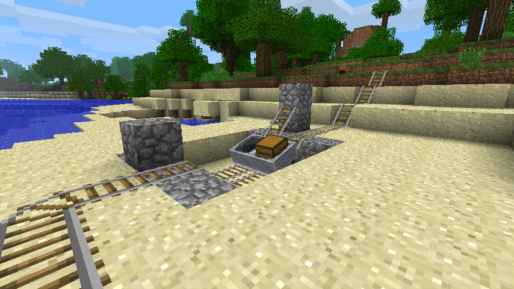

boosters and better boats

about
This mod restores the old minecart booster and boat
behavior. Boosters can be created to speed up or
slow down minecarts without the use of powered
carts or rails. Boats will once again rise with
alarming rapidity when submerged, allowing the
construction of boat elevators and other contraptions.
compatibility
Anything that edits EntityBoat or EntityMinecart
(fz.class or yl.class) is incompatible.
download
version 0.1
<< home